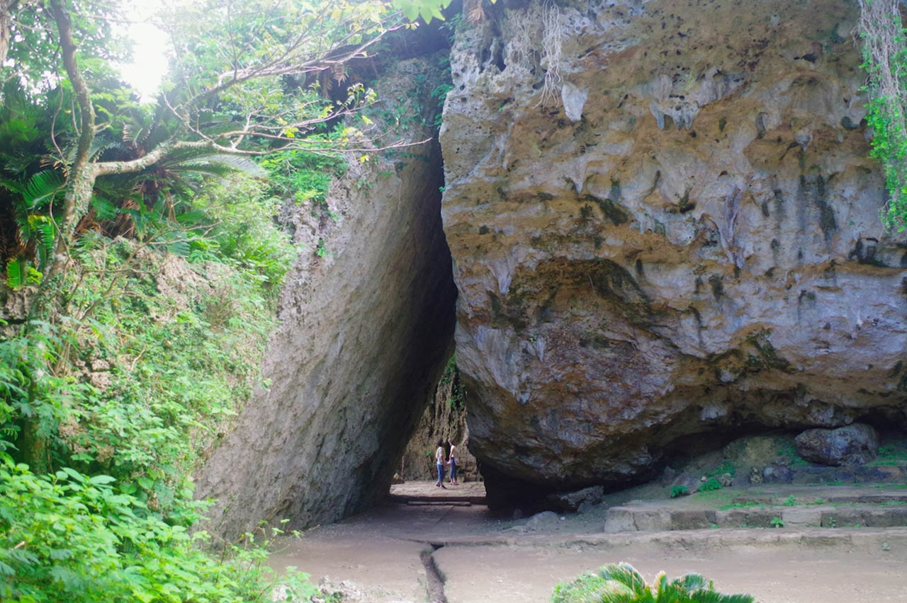

斎場御嶽
自然
琉球の始祖「アマミキヨ」が造ったとされ、国始めの七御嶽の一つといわれる沖縄最高の聖地です。
琉球の最高神女であった聞得大君(きこえおおきみ)の就任の儀式はこの斎場御嶽で執り行われました。
現在でも多くの人々が祈りに訪れる大切な場所です。所要時間は60分〜90分ほどを見ておけば安心！
沖縄の人々が大切に守ってきた聖域をカラダとココロ全部で感じてみてくださいね。
岩肌がでているところもあるため、スニーカーでいくのがオススメです。
INFORMATION
| 住所 | 〒901-1511 沖縄県南城市知念久手堅 |
|---|---|
| アクセス | 那覇空港から那覇空港自動車道で南風原南ICまたは南風原北IC経由、約50分。 |
| 那覇バスターミナルから38番：志喜屋線で「斎場御嶽入口」下車。運賃830円 ※1時間に1本の運行のため、事前にお確かめください |
|
| 料金 | 大人300円 |
| 公式HP | http://www.city.nanjo.okinawa.jp/tourism/2011/11/sefa.html |